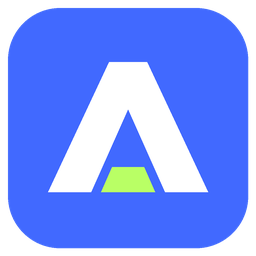

생성에서 작업으로,
자연스럽게.
AI 이미지와 영상을 생성하고, 결과를 프로젝트 또는 레퍼런스 보드로 끌어오세요. 사용 중인 편집기와 연결해 다음 작업을 이어갑니다.
나만의 API 키로 연결
amtoolamtool 살펴보기 ↗WINDOWS WORKSPACE · FOR YOUR CREATIVE FLOW
만들고, 모으고, 이어가세요.
AI 생성과 프로젝트, 레퍼런스 보드가 만나는 당신의 작업 공간.
당신이 쓰던 도구와, 당신만의 작업 방식 그대로.
YOUR TOOLS, CONNECTED.
AI 이미지와 영상을 생성하고, 결과를 프로젝트 또는 레퍼런스 보드로 끌어오세요. 사용 중인 편집기와 연결해 다음 작업을 이어갑니다.
나만의 API 키로 연결프로젝트와 컷 단위로 파일을 관리하세요. Photoshop, Clip Studio, Krita 등 작업에 필요한 파일을 한곳에서 확인합니다.
프로젝트 · 컷 · 미리보기이미지와 영상을 자유롭게 배치하고 노트와 화살표로 연결하세요. 집중 모드와 클릭 통과로 그림 위에 레퍼런스를 겹쳐볼 수 있습니다.
보드 · 집중 모드 · 클릭 통과REFBOARD, NOW PART OF amtool.
RefBoard에서 시작한 아이디어를 amtool 안에서 이어갑니다.
레퍼런스 정리를 넘어, 생성과 프로젝트 관리까지 한 공간에서.
LESS SWITCHING. MORE MAKING.
모아둔 영감을 바로 곁에 두고,
떠오른 생각을 다음 작업으로 이어가세요.
불투명도와 항상 위, 클릭 통과를 함께 사용해 레퍼런스를 겹쳐보면서 아래 편집기에서 작업하세요.
집중 모드로 보드에 몰입하고, 자주 쓰는 조작은 손에 익은 단축키로 바꾸세요.
좌표 즐겨찾기로 원하는 위치를 다시 찾으세요. 보드 위치 링크로 같은 파일에 접근하는 팀원에게 그 자리를 전달할 수도 있습니다.
AI 이미지·영상 생성, 프로젝트 파일 관리, 레퍼런스 보드를 한 공간에 모은 Windows용 작업 도구입니다. 여러 창을 오가는 시간을 줄이고 창작의 흐름을 이어가는 데 집중합니다.
Photoshop, Clip Studio Paint, Krita 등과 함께 사용할 수 있습니다. 프로그램마다 지원하는 연결 및 파일 가져오기 방식은 다릅니다.
지원하는 AI 제공사의 API 키를 연결해 사용합니다. 제공사의 API 이용 요금과 사용 제한은 별도로 적용됩니다.
아이템을 우클릭해 좌표 주소를 복사하고 공유하세요. 링크를 열면 amtool에서 해당 보드 위치로 이동합니다. 받는 사람도 보드와 이미지 폴더에 접근할 수 있어야 하며, 링크만으로 파일이 업로드되거나 전송되지는 않습니다.
레퍼런스 보드의 아이디어가 amtool의 생성·프로젝트 관리 기능과 만났습니다. 이전 RefBoard 파일 형식의 자동 호환은 보장되지 않으므로 원본 파일을 보관해주세요.